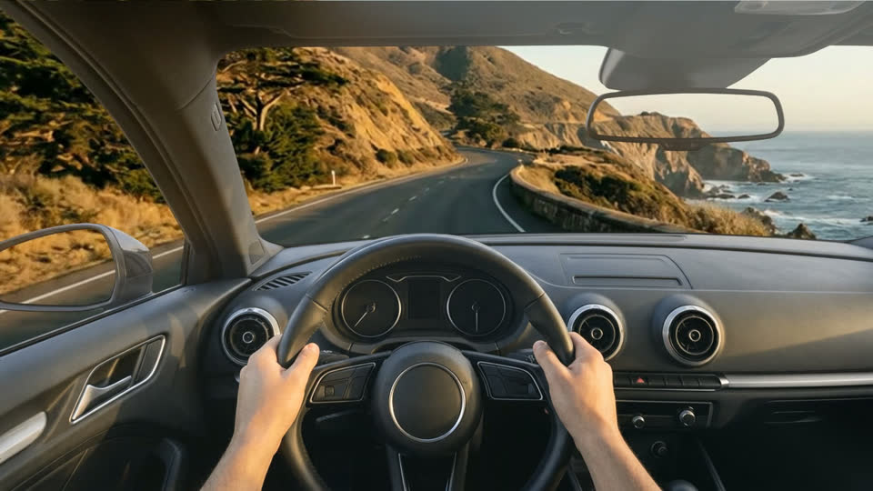
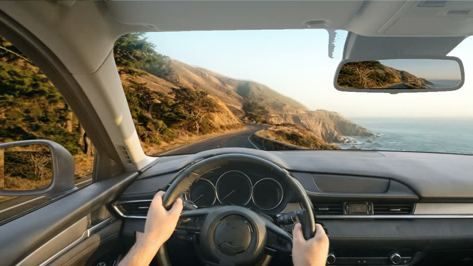
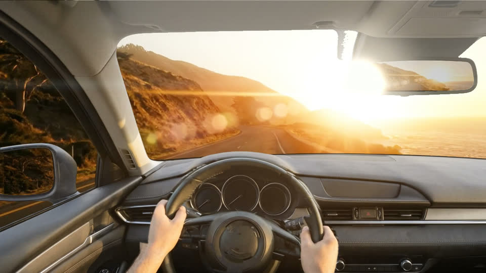
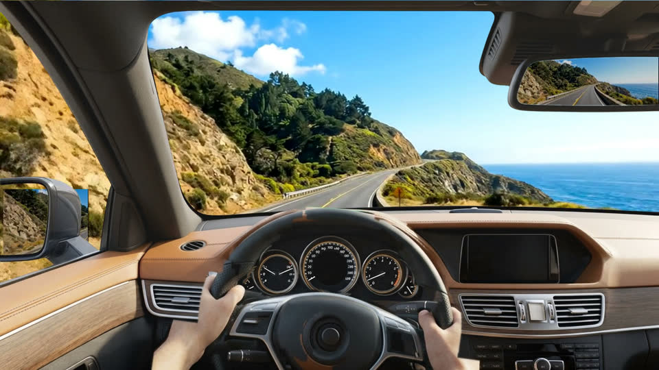
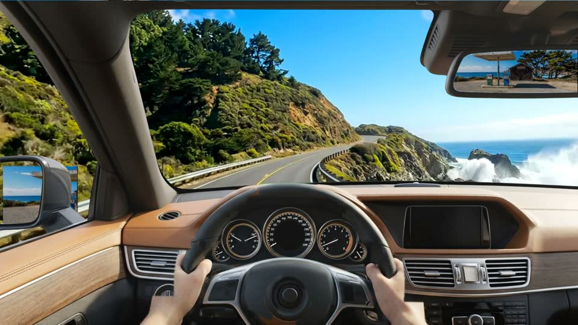

Verdict
Keep the plates clean, put the realism in a cockpit layer. The reference video's feeling of driving comes from the cockpit framing and the light, not from steering. Baking hands and a dashboard into 45 to 150 generated clips can't stay consistent, and it leaves nowhere for the live gauges, mirrors and lights that make VibeTour react to the IDE.
HeyGen Video is real, cheap and useful, but not for anchored clips. It takes a first frame only. Its jobs here: trailers and previews, and possibly cruise plates if a looser join style passes the bake-off.
Round 1 of the bake-off is in. Seedance 2.0 Fast made a true anchored loop (seam 0.96) at full speed. Veo 3.1 Lite drove well and landed on a lookalike of its anchor for a third of the price. Kling crawled. HeyGen's two takes are clean drives at $0.135 each, usable with dissolve joins only. The cockpit layer composited over the Veo loop on the first try. Round 2 decides the default join style and the model.
Frames pulled at 2 fps across the 5 min 53 s sample show three things the eye misses at speed:
That's fine for a music channel. It's exactly what a Journey Pack can't have: one interior, one pair of hands and one light across every clip, playing for 90 minutes.
| Fact | Detail |
|---|---|
| Product | heygen-video-1 on POST /v3/models/videos, launched 30 Sep 2026. MiniMax H3, post-trained by HeyGen. Non-avatar scene generation. |
| Promo | $0.01/s at 480p through October (50% off $0.02). 768p about $0.015 promo, $0.03 list. 1080p and 2K bill at 3× 768p. The end date isn't published. |
| Clips | 5 to 15 s, 24 fps H.264, generated audio on every clip (we strip it). Reproducible seed. 21:9 available. |
| Conditioning | First frame: yes. last frame: no. Reference mode: up to 9 images, 3 videos (first 5 s read), 3 audio. Reference and first-frame modes are mutually exclusive. |
| Their caveats | Best on "a locked or barely moving camera"; least reliable on "close hand work". Hands on a wheel hit both. |
| Also on | OpenRouter as heygen/heygen-video-1 at list price: $0.03/s 768p, $0.09/s 2K, reference mode 2×. |
| Billing | Standalone prepaid API wallet, separate from the web plan. Ours: $15, auto-reload on. |
| Skill | The official heygen-video skill is a presenter/avatar producer, "not for cinematic b-roll without a presenter". Nothing to install. Their llms.txt plus the model page is the full spec. |
The standard asks every clip to start and end on a shared frame so the player can chain them with no visible join. The question from the review: why not play 10 s of one stretch, dissolve, and jump to another stretch of the same road?
The camera rules stay either way: same lane, same light, same sun direction, or a dissolve between sun-left and sun-right looks wrong. The cockpit layer makes dissolves easier to accept, because the cockpit never changes; only the view beyond the glass does.
Proposal: make anchors a join style in the manifest ("joins": "anchored" | "dissolve") rather than a requirement, and let the bake-off decide the default. "Anchored" could earn a marketplace badge.
The windshield footage, as the standard already specifies: no car, anchors, loops.
made by: the pack, any modelA still of dash, A-pillars, mirror housing and roofline with the windshield cut to alpha, plus wheel and hands as a separate sublayer that rotates about the hub.
made by: an image model, once per carGauges, mirrors with crew agents, rain on the glass, the your-turn light, the refuel stop. Everything VibeTour draws today.
made by: existing codeBaked cockpit footage still has a place: the pack trailer and marketplace preview, made with HeyGen reference-to-video from the same cockpit still. Cuts are a feature there, and it's cents per shot.
Live from OpenRouter's GET /api/v1/videos/models, audio off. HeyGen direct prices from its docs.
| Model | Last frame | Clip | Res | $/s | Note |
|---|---|---|---|---|---|
| HeyGen Video (direct, promo) | no | 5–15 s | 768p | ~0.015 | $0.01 at 480p. 1080p/2K at 3×. |
| HeyGen Video (OpenRouter) | no | 5–15 s | 768p | 0.03 | 2K $0.09. Reference mode 2×. |
| Veo 3.1 Lite | yes | 4/6/8 s | 720p | 0.03 | 1080p $0.05. Seed. |
| Hailuo 3 Max | one only | 5–15 s | 768p | 0.08 | Listed as both, but the API rejects first and last together. Same family as HeyGen Video. |
| Seedance 2.0 Fast | yes | 4–15 s | 720p | ~0.09 | Priced per video token; $0.73 measured for 8 s. |
| Kling 3.0 Standard | yes | 3–15 s | 720p | 0.084 | Pro $0.112. Crawled at half speed in the test. |
| Wan 2.7 | yes | 2–10 s | 1080p | 0.10 | Wan 3.0 is first frame only. |
| FLUX.3 Video | yes | 5–20 s | 720p | 0.17 | Has video continuation ($0.41). |
| Veo 3.1 | yes | 4/6/8 s | 1080p | 0.20 | 4K $0.40. |
Not on OpenRouter: Kling O3 (the only model that pins reference "elements" and start/end frames in one request), Luma Ray 3.2 (native loop flag), Runway Gen-4.5 beyond first frame.
Same anchor, same prompt, 8 s, one take each. Three anchored loops (first frame = last frame = the anchor) and two first-frame-only takes from HeyGen for the dissolve test. Motion is the mean frame-to-frame luma difference at 360p; the loop seam is the SSIM between a clip's own first and last frames.
| Clip | Cost | Motion | Loop seam | Read |
|---|---|---|---|---|
| Seedance 2.0 Fast, 720p | $0.73 | 5.66 | 0.96 | true loop Full-speed drive that lands on the frame. Asphalt cracks boil slightly between frames. |
| Veo 3.1 Lite, 720p | $0.24 | 6.03 | 0.74 | near loop Full-speed drive, no reversal; ends on a matching stretch of road rather than the exact frame. Adds thin letterbox bars. |
| Kling 3.0 Standard, 720p | $0.67 | 3.13 | 0.88 | crawl Half the apparent speed of the others. Output 1284×716. |
| HeyGen Video, 768p, take A | $0.135 | 5.46 | — | clean drive Light and lane held. No loop possible. |
| HeyGen Video, 768p, take B | $0.135 | 5.51 | — | markings drift A yellow centre line appears near the end. |
Hailuo 3 Max was in the plan but OpenRouter rejects a first and last frame together for it ("a single keyframe image"), despite the catalogue listing both. Kling took its slot.

What the composite taught us, for draft 0.2:
Two more anchors were made from the Big Sur master as a style reference ($0.07 each): the Carmel Highlands gas station for the stop, and a Carmel coast road for a second scene. Then four shots per model: stop-in (Big Sur → gas station), stop-hold (gas station loop), a Carmel cruise loop, and a transition (Big Sur → Carmel). Seedance and Veo used first and last frames; HeyGen used the first frame only. Veo also made a 1080p Big Sur loop.
| Shot | Seedance 2.0 Fast | Veo 3.1 Lite | HeyGen Video |
|---|---|---|---|
| stop-in, 8 s | drives it Slows, turns in past a blank sign post, lands on the anchor (0.75). Heavy sun flare. | morphs Trees materialise over the road and a ghost car appears as it cross-dissolves to the station. | wrong station A convincing pull-in, to a different, busier station with power lines and a sign. |
| stop-hold | best Gentle sway in the trees, motion 0.32. | ok Almost a still, motion 0.15. | camera drifts Motion 1.8; not a loop. |
| Carmel cruise loop | slow Half speed (2.8) though the loop closes (0.82). | good Full speed, cove in view, loop closes on a lookalike (0.68). | clean drive No loop. |
| transition, 8 s | rushed Scenery flies past at 10.2 to reach the Carmel frame. | ok Steady drive, ends near the Carmel frame (0.61). | markings drift Yellow centre lines again. |
| 1080p loop | 720p max on Fast | 1920×1080, seam 0.69, $0.40 | not run |
| Round 2 cost | $3.10 | $1.36 | $0.58 |
Numbers in brackets are SSIM of the last frame against the target anchor at 640×360, unaligned, so they're relative, not absolute.
Two 60-second composited sessions, one per join style, sit in the review folder beside the clips: session-anchored-seedance.mp4 and session-dissolve-heygen.mp4. Judged on those, dissolve won. That removes the last-frame requirement from the standard entirely: anchors become look references, holds loop by crossfade, and HeyGen at $0.017/s joins the cruise-plate options. Clips should run 12 to 15 s so a session has half as many dissolves.

| Change | How |
|---|---|
| Framing | The cockpit is generated 4:3, square to the car, wheel hub at the centre, and the 16:9 frame is cropped from the top, so the forearms run out of the bottom and the rotated cut never shows. (A first attempt with the wheel at 40% turned the whole cabin to the right; see "Aim" below.) |
| Wheel and hands | An image-model edit removes the wheel and hands; the difference between the two stills, clipped to a disc round the hub and two arm bands, is the cutout. The cutout is keyed and despilled like the cockpit, which removed a green fleck on the rim. |
| Steering follows the road | Dense optical flow on the plate at 320×180; the median horizontal flow in the band round the horizon is the camera's yaw. Smoothed over half a second, scaled so the 97th percentile is 12.5°, and sent to the rotate filter frame by frame. On the Big Sur loop the wheel rises to 11.8° at the apex and settles to 3° where the road is still bending, instead of returning to centre. |
| Mirrors | The glass is found as the transparent regions of the keyed still that aren't the windshield (two components, 235×90 and 99×82). What a mirror shows is the road receding, so the feed is the same plate run backwards at 320×180, darkened 20%: the centre for the rear-view, the left edge for the door mirror. |
| Glare | The plate's highlights above 150 are blurred and screened back onto the glass region only, so bloom sits where the sun is and moves with it. For stronger flare the plates should be prompted for a low sun in frame; HeyGen and Seedance both oblige. |
Everything above runs from two generated stills per car ($0.14) and one FFmpeg graph. The session renders at about real time on a laptop.
The v2 render pointed the car about 45° to the right, and it took a side-by-side with the v1 session to see why. Asking the image model to put the wheel at 40% of the frame didn't slide the camera sideways; it turned the camera toward the passenger side: the left A-pillar landed in the centre of the frame and the dash ran away to the right. No plate offset can fix a turned cabin. The rule for the standard, in two parts: generate the cockpit square to the car, wheel hub at the horizontal centre, an A-pillar at each edge; and keep the plate centred so its vanishing point sits over the hub. An off-centre framing, if ever wanted, comes from cropping a wider straight-ahead still, never from the prompt. Cockpit v3 is that straight-ahead still, on the tall canvas so the arms still run out of frame.

Two layers, and both were needed. The plate is prompted for a low sun in frame with bloom, a streak and ghost spots, and both Veo and HeyGen render that convincingly from an anchor that already has it. Then a flare layer (flare.py) finds the sun each frame as one round, clipping blob in the sky (cloud banks are irregular and are ignored), and draws a bloom, an anamorphic streak and five tinted ghost spots on the line through the frame centre, with the intensity eased so it never flickers. It's confined to the glass, with faint ghosts allowed across the dash and none on the headliner or the mirror housing. It's a per-variant feature: on for "into the sun" variants, off otherwise. Left on over a midday plate it fired on the clouds and tinted the whole cabin green, which is how v4's colour problem was found.

The review said it plainly: beige, washed out, a dash like a block of clay, dials you could barely see. Three causes, all self-inflicted:
The standard's anchor and clip prompt templates will carry the vivid wording, and the cockpit template will list materials and the lit cluster. Per-variant palettes (midday, golden hour, night city with a glowing red cluster like the reference) become a creator choice, not an accident of the prompt.

A new master anchor for Big Sur carries the two details from the reference footage: the corrugated galvanised guardrail on weathered wooden posts along the cliff edge, and swells crashing onto the rocks with spray exploding upward. The other three anchors (Carmel, the gas-station approach, the stop) were made from it as a style reference so the light and palette hold across the pack. The clip prompts describe the waves as an event ("every few seconds a wave hits and white spray explodes upward and hangs in the air") rather than as scenery, and both Veo and HeyGen animate it.
| Shot | Model | Cost | Read |
|---|---|---|---|
| Cruise A, Cruise B (8 s) | Veo 3.1 Lite | $0.48 | waves and rail Two different sets break during each clip; the rail slides past cleanly. |
| Transition Big Sur → Carmel (8 s) | Veo 3.1 Lite | $0.24 | ok Granite and cypress arrive as the surf fades. |
| Carmel cruise (8 s) | Veo 3.1 Lite | $0.24 | ghost A translucent cypress crosses the road mid-clip. Retake. |
| Stop-in (10 s) | Seedance 2.0 Fast | $0.91 | pulls in From the approach anchor, slows and rolls under the canopy. The "stop already in view" anchor rule works. |
| Hold (12 s) | Seedance 2.0 Fast | $1.09 | still Clouds and cypress move, nothing else. |
| Cruise A (12 s) | HeyGen Video | $0.18 | waves and rail Holds the palette; slightly softer than Veo. |
| Hold (12 s) | HeyGen Video | $0.18 | drifts Reverses out onto the road. HeyGen can't hold a camera still; holds stay with Seedance. |
The six good shots, dissolved and composited with cockpit v4, make the 49-second session-v4.mp4: two Big Sur cruises with crashing waves, the transition, Carmel, the pull-in and the hold at the pumps. Round cost $3.30; the day's total is about $13.
| Shot | Tests | Models | Cost |
|---|---|---|---|
| Cruise loop, anchor → same anchor | Does the clip land on its frame? Does the loop seam show? | Veo Lite, Hailuo, Seedance | ~$1.10 |
| Cruise, first frame only | HeyGen's dissolve join: two takes from the same anchor, dissolved | HeyGen 768p | ~$0.25 |
| Stop-in | Slowing and stopping without a lurch or a morph | the two best from above | ~$0.60 |
| Hold, 10 s | Gentle motion only; loops by anchor or by crossfade | the two best from above | ~$0.80 |
Judged with the standard's review checklist: road drift, lane, shake, speed jumps, text, flicker, and whether the last frame lands. Results and the chosen model go into draft 0.2 of the standard.
Generated with Gemini 3.1 Flash Image through OpenRouter for $0.07 from the standard's anchor prompt: Big Sur, right lane, golden light, gentle right curve, no car, no text, vanishing point at 42%. First take, no retake.
| Question | Decision |
|---|---|
| Cockpit layer over clean plates, or baked-in hands? | Cockpit layer. agreed |
| Spend on a bake-off? | Yes, on both keys. agreed |
| First car | Neutral and unbranded. Real badges later, once the system looks great. agreed |
| Update the standard now? | Wait for the bake-off; the standard should set an example. agreed |
| HeyGen CLI | Install it. agreed |
| Join style default: anchored or dissolve? | Dissolve, judged on the composited sessions. decided |
| Plate model for VibeTour Originals | Per slot family. With dissolve joins, HeyGen Video is back in the running for cruise plates. decided |
| Cockpit framing | Straight ahead, wheel centred, forearms out of frame. The left-shift idea is dropped: it turns the cabin. decided |
| Mirrors | Road behind, from the time-reversed plate, inside the glass only. The side window is a window: the plate shows through it. done |
| Palette | Vivid midday as the default look, named in the prompts. Golden hour and night become variants. decided |
| Cabin materials | Leather, wood, metal, lit cluster, named in the cockpit prompt. done |
| Lens flare | Per variant, on only with the sun in frame. decided |
| Scene details | Crashing waves with spray, and the W-beam guardrail on wooden posts, in the Big Sur master anchor and every clip prompt. done |
| Draft 0.2 of the standard | Next, after this round's review. queued |
| Stop for the first pack | Carmel Highlands gas station. agreed |
| Steering | 2.5D wheel-and-hands layer, ±12.5°. Re-grips and wheel taps as later experiments. agreed |
| HeyGen's role | Trailers and previews; cruise plates only if dissolve joins win. agreed in principle |
A note on logos
Using a real badge without permission isn't free advertising in the law's eyes; it's trademark use, and a marketplace that sells packs makes it commercial use. Ferrari in particular polices this. Unbranded interiors cost nothing now. If a real car matters later, treat it as a partnership to ask for, not a default.